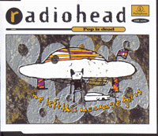
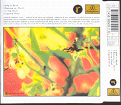

|

|
Catalog # : CDR 6345
Reference # : ?
Released 05/10/93
Track Listing :
<1> Pop Is Dead
<2> Banana Co. (acoustic)
<3> Creep (live)
<4> Ripcord (live)
Banana Co. Recorded at the Signal Radio in Cheshire. Creep and Ripcord recorded live at the Town and Country Club in London.
Also available in :
Cassette : TCR 6345
12" : 12R 6345
CD PROMO : CDRDJ 6345
12" PROMO : 12RDJ6345